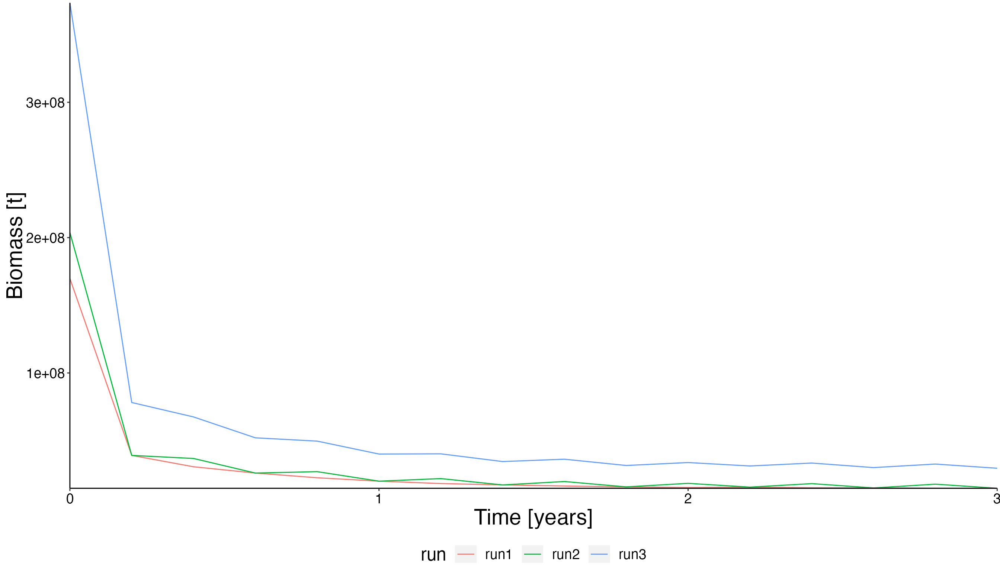
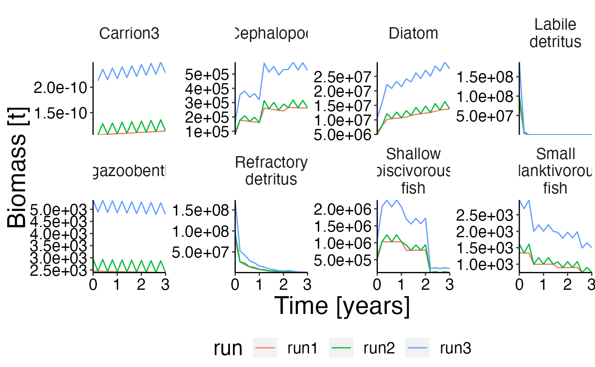
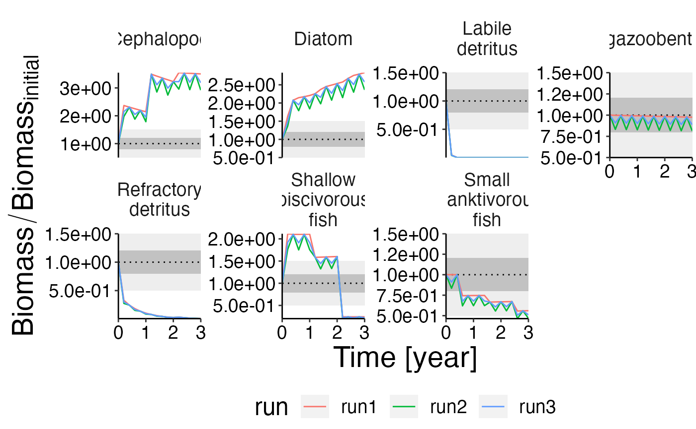
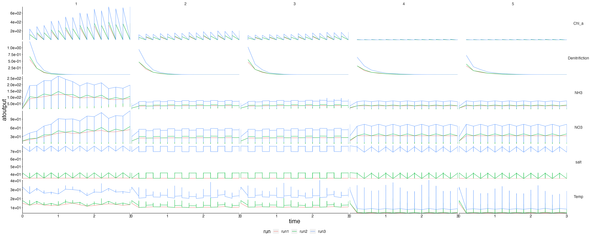

NOTE: This vigentte is optimised for longer simulation runs. Therefore the output is not as pleasant due to the fact that the dummy setas file have a running time of 5 years.
In order to use this vignette make sure to render model-preprocess.Rmd for each simulation first. Save the resulting list of dataframes as shown in data-raw/data-vignette-model-preprocess.R. Of course, you can also use a personalised version of mode-preprocess.Rmd. Please make sure to add all resulting dataframes to the list of dataframes at the end of the preprocess vignette and change model-comparison.Rmd accordingly.
library("atlantistools")
library("ggplot2")
library("gridExtra")
gen_labels <- list(x = "Time [years]", y = "Biomass [t]")
# You should be able to build the vignette either by clicking on "Knit PDF" in RStudio or with
# rmarkdown::render("model-comparison.Rmd")This section is used to read in the simulations. In order to demonstrate the vignette, dummy simulations are generated. Please change this accordingly.
result <- preprocess
dummy_setas <- function(list, mult) {
for (i in seq_along(list)) {
if (is.data.frame(list[[i]])) {
mult <- rep_len(mult, length.out = nrow(list[[i]]))
list[[i]][, ncol(list[[i]])] <- list[[i]][, ncol(list[[i]])] * mult
}
}
return(list)
}
store_data <- list(result,
dummy_setas(result, mult = c(1, 1.2)),
dummy_setas(result, mult = c(2, 2.2)))
result <- combine_runs(outs = store_data, runs = c("run1", "run2", "run3"))## Warning: `summarise_()` was deprecated in dplyr 0.7.0.
## Please use `summarise()` instead.
## This warning is displayed once every 8 hours.
## Call `lifecycle::last_lifecycle_warnings()` to see where this warning was generated.## Warning: `group_by_()` was deprecated in dplyr 0.7.0.
## Please use `group_by()` instead.
## See vignette('programming') for more help
## This warning is displayed once every 8 hours.
## Call `lifecycle::last_lifecycle_warnings()` to see where this warning was generated.
plot <- plot_line(sum_bio, wrap = NULL, col = "run")
update_labels(plot, gen_labels)
plot_line(result$biomass, col = "run", ncol = 4) %>% update_labels(gen_labels)
df <- convert_relative_initial(result$biomass)## Warning: `filter_()` was deprecated in dplyr 0.7.0.
## Please use `filter()` instead.
## See vignette('programming') for more help
## This warning is displayed once every 8 hours.
## Call `lifecycle::last_lifecycle_warnings()` to see where this warning was generated.## Warning: `mutate_()` was deprecated in dplyr 0.7.0.
## Please use `mutate()` instead.
## See vignette('programming') for more help
## This warning is displayed once every 8 hours.
## Call `lifecycle::last_lifecycle_warnings()` to see where this warning was generated.
plot <- plot_line(df, col = "run", ncol = 4)
plot <- plot_add_box(plot)
update_labels(plot, labels = list(x = "Time [year]", y = expression(Biomass/Biomass[initial])))
plot <- plot_line(result$physics, wrap = NULL, col = "run")
custom_grid(plot, grid_x = "polygon", grid_y = "variable")